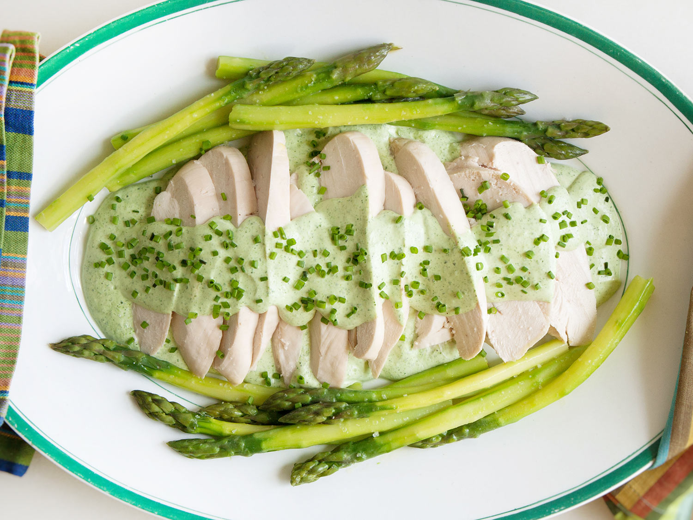

Poached Chicken and Asparagus With Green Goddess Sauce Recipe
CANAL HOUSE
favorite_borderFavorite? Bookmark it!
Rating:
star
star
star
star_half
star_border

[Photograph: Canal House]
This easy meal of tender and juicy poached chicken with asparagus and a creamy green goddess sauce is light and fresh, perfect for marking the beginning of spring. For this dish, we lightened the green goddess with whipped cream, which softens the herbaceous flavor, making it more delicate, and lends a luscious, mousse-like consistency. (If you like, make just the dressing according to the instructions in step 4, omitting the whipped cream, and serve it with sturdy lettuces for salads.)
WHY IT WORKS
- Starting the chicken in cold water and keeping the temperature under a boil cooks it perfectly, and prevents it from becoming tight and dry.
- Folding softly whipped cream into the green goddess dressing makes it incredibly light and airy.
- Aromatics in the poaching liquid create a flavorful broth that can be enjoyed on its own.
YIELD:
Serves 4 to 6
ACTIVE TIME:
1 hour
TOTAL TIME:
1 hour 15 minutes
INGREDIENTS
For the Chicken and Asparagus:
- 4 bone-in, skin-on, split chicken breast halves (about 4 pounds; 1.8kg)
- 1 carrot, peeled and cut into large dice
- 1 celery rib, cut into large dice
- 1 leek, white and light green parts only, washed well and cut into large dice
- 2 large sprigs fresh tarragon
- 1 cup (235ml) dry white wine
- 1 1/2 tablespoons (15g) kosher salt, plus more for seasoning
- 1/2 teaspoon (3g) whole black peppercorns
- 12 large spears asparagus (about 1/2 pound; 225g), washed well, woody ends trimmed and stalks peeled
- 4 tablespoons (60g) unsalted butter, melted
For the Green Goddess Sauce:
- 3/4 cup (170g) mayonnaise
- 1/4 cup (55g) sour cream
- 1 tablespoon (15ml) rice wine vinegar
- 1/2 bunch watercress (about 2 ounces; 55g), leaves only
- 1/4 cup fresh tarragon leaves
- 1/4 cup flat-leaf parsley leaves and tender stems
- 1 1/2 tablespoons (15g) kosher salt, plus more for seasoning
- 10 fresh chives, plus minced chives for garnish
- 4 oil-packed anchovy fillets, drained Kosher salt and freshly ground black pepper
- 1 cup (240ml) heavy whipping cream
DIRECTIONS
- For the Chicken and Asparagus: In a large saucepan, combine chicken with carrot, celery, leek, tarragon sprigs, wine, salt, and peppercorns. Add enough water to cover chicken and other ingredients by about 1 inch. Set over medium-high heat until water temperature reaches between 150 and 160°F (66 and 71°C) on an instant-read thermometer; adjust heat to maintain water temperature in the 150-160°F range. It's okay if the temperature bounces around a little, but try to keep it above 150 and below 170°F (77°C). Cook until thickest part of chicken registers 150°F (66°C) on an instant-read thermometer, about 1 hour. Remove chicken from broth and let rest.
- When chicken is cool enough to handle, remove skin and bones. (If you want, return skin and bones to poaching liquid and simmer for 30 minutes longer, then strain and reserve liquid as a broth for another use.) Cover chicken breasts with plastic wrap, pressing plastic directly and firmly against the surface of the meat, and set aside.
- Fill a skillet large enough to accommodate asparagus with cold water, add a large pinch of salt, then bring to a boil over medium-high heat. Add asparagus and cook until tender, about 4 minutes. Transfer asparagus to a paper towel-lined plate to drain, then discard paper towels. Drizzle asparagus with melted butter and set aside.
- Meanwhile, for the Green Goddess Sauce: Using a blender or food processor, puree mayonnaise, sour cream, vinegar, watercress, tarragon, parsley, chives, and anchovies until smooth. Season with salt and a generous grinding of black pepper. Dressing will keep, covered, in the refrigerator for up to 1 week.
- About 1 hour before serving, allow dressing to come to room temperature. Before serving, use a whisk or electric mixer to whip cream in a large metal bowl until soft peaks form. Fold whipped cream into dressing to suit your taste.
- To Serve: Slice warm or room-temperature chicken breasts against the grain. Spoon some sauce onto a large platter. Arrange chicken on top of sauce and arrange warm or room-temperature buttered asparagus around chicken. Spoon more sauce over chicken. Season with salt and pepper and garnish with minced fresh chives. If you prefer, you can also serve on individual plates. Serve any extra green goddess sauce on the side.
SPECIAL EQUIPMENT
Blender or food processor, instant-read thermometer
THIS RECIPE APPEARS IN
The Canal House Perfect Bite: Poach Your Chicken and Asparagus for a Light, Easy Meal
CANAL HOUSE || CONTRIBUTORS
Canal House is a culinary, photography, and design studio operated by Christopher Hirsheimer and Melissa Hamilton. They are home cooks who write about home cooking for other home cooks. Together, they collaborate on Canal House Cooking, a series of seasonal cookbooks for which they do all the writing, recipes, photography, design, and production. They were the recipients of the 2013 James Beard Foundation award in the General Cooking category for their cookbook, Canal House Cooks Every Day (Andrews McMeel, 2012), and were nominees for their Bon Appétit video series, "The Seasonal Cooks," as well as 2013 IACP nominees for Photography and Food Styling. Their next book, Cook Something (Little, Brown), will be available fall 2017.
3 COMMENTS
4:39PM on 03/22/17I used to work in a restaurant that did something similar with Louis Dressing for seafood salads -- i.e., made a standard Louis and then moussed it up with just a bit of whipped cream. Really poshed it up; bet it would work great with Green Goddess too.